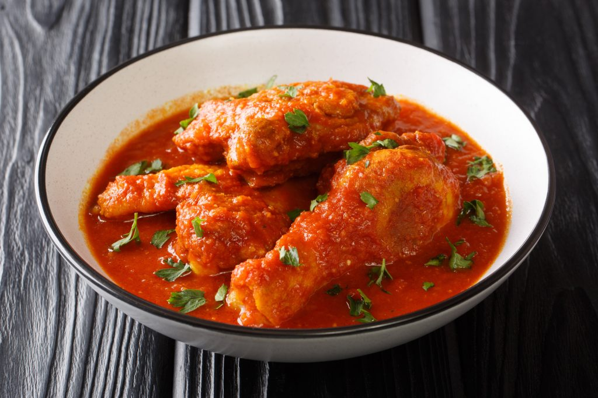

Hello wassup guys!!
Lets start singing ayam masak merah song
Puding karamel

Bahan-bahan
Bahan Utama
kunyit
1/2 ekor ayam
garam
1 mangkuk minyak
3 sudu besar sos romato
2 sudu besar sos tiram
kicap manis
cili merah
sedikit air
2 sudu besar air asam jawa
bawang besar, hiris bulat
Bahan Tumbuk Halus
3 ulas bawang putih
4 biji bawang merah
2 inci halia
Cara Memasak
Penyediaan Utama
Gaul ayam bersama garam dan kunyit.
Panaskan minyak dan goreng ayam separuh masak. Angkat dan ketepikan.
Kurangkan sedikit minyak gorengan ayam tadi cukup sekadar untuk tumisan. Masukkan bahan tumbuk halus dan kacau sehingga kekuningan.
Masukkan cili kisar, sos tiram, sos tomato, dan ayam tadi. Kacau seketikan.
- Masukkan pula kicap, agak-agak sahaja supaya cukup kuahnya, kemudian masukkan cili merah dan sedikit air.
- Tutup dan biarkan ayam masak, masukkan tomato dan bawang besar. Kacau sekejap sahaja anggaran bawang sedikit layu dan padamkan api.
- Angakat dan hidang bersama taburan cili dan daun bawang.